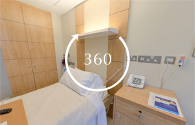
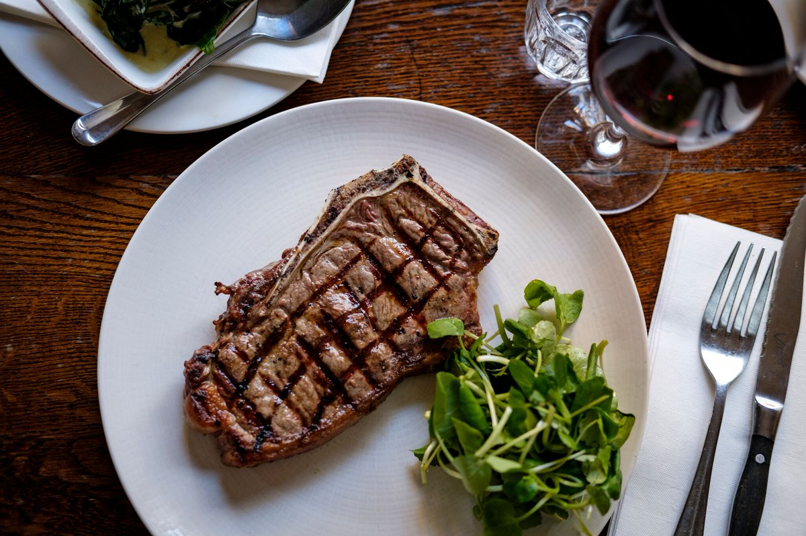

About your stay
Your Room
The hospital has over 120 in-patient bedrooms, making it one of the largest private hospitals in the UK. Standard in-patient rooms are single, with air conditioning and ensuite bathroom facilities, including a shower. Many of the rooms overlook the River Thames from the London Bridge Hospital site, while others have views across London towards St Paul’s Cathedral at Private Care at Guy’s. Each bedroom has a TV, satellite channels, radio, a direct dial telephone, a fridge and a Nurse Call system. We can arrange daily newspapers, books and a number of business services. We are happy to discuss your individual needs prior to admission, so that everything is in place when you arrive
Hosiptal Identification
An identity band is used to identify you during your hospital stay. It is essential to wear your identity band, as it has your accurate details on it, and ensures that staff can identify you correctly – thus giving you the correct care that you require.
You will be informed either in your pre-admission letter, or by a member of the team when you are admitted, that you are required to wear your identity band at all times to ensure your safety during your stay.
A member of staff should administer you with two identity bands as soon as you are admitted to the ward, which you are required to wear throughout your stay. At London Bridge Hospital, we use two bands in case one has to be removed for a procedure – these will be put onto each wrist. The identity bands will include all essential information about you that the staff need to confirm your identity.
If you have an allergy, you will be given red identity bands containing your allergy details to wear throughout your stay. This will alert staff to the fact that you have an allergy.
A member of staff will check that the details on the band, including the spelling of your names and date of birth, are correct before putting them on you. Throughout your stay, your details will be checked by a member of staff before you undergo any procedure and they will ask you to confirm your name and date of birth on several occasions to ensure that we give you the right care at all times.
How can you help?
You can help by checking the wristbands very carefully before they are put on your wrists to ensure the details are correct. Please take your time to do this, as these details are essential in ensuring you receive the correct care. If the information on your wristband is incorrect, please tell your nurse as soon as possible.
If you have not been issued with a wristband, please ask a member of staff for one. If your band comes off or is uncomfortable, please ask a member of staff to adjust or replace it.
Health and Safety Warning: Electronic Cigarettes
Please note that London Bridge Hospital does not allow electronic cigarettes to be used in any part of the premises due to fire risks. There have been reported cases of fires resulting from these devices being charged. Also the vapour which also sets off the sensitive fire alarms in the building
Catering
Our Chefs are proud to offer freshly-cooked, hot meals, prepared on site every day. We offer a high-quality service, with a carefully crafted menu to suit all tastes. If you have any special requests regarding meals, or any special dietary requirements, you are welcome to contact one of our Catering Team members, who will be happy to assist you.
In-room Entertainment
You will have access to in-room entertainment with access to TV and radios, including international stations.
Wifi
You can also take advantage of free wifi which available across the hospital. To connect, simply go to your wifi settings and search for HCA_Guest.